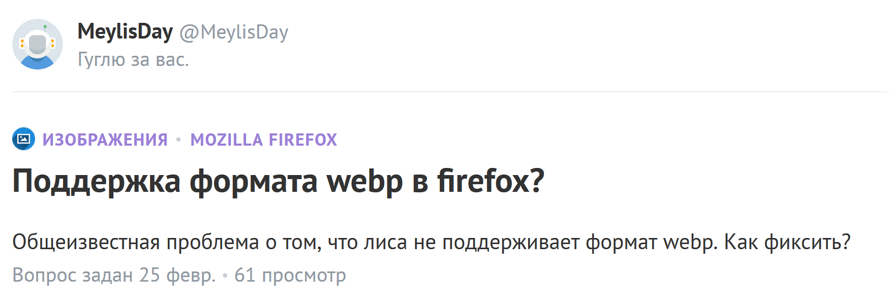
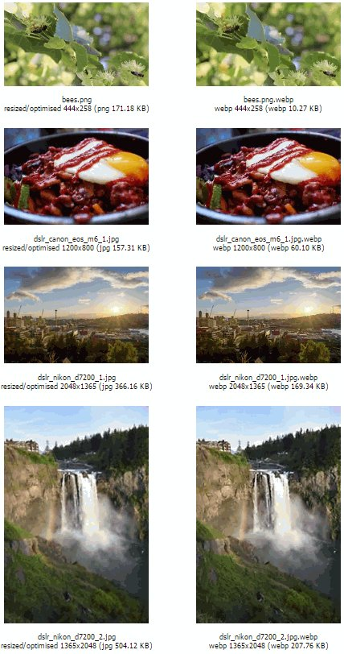

Сравнение форматов
Описание задания:
- В сети, кроме изображений форматов jpeg, png, gif, поддерживаются также изображения в формате WebP.
- Очень было бы интересно узнать, что за такой формат, достоинства и недостатки, сравнить на каких-либо типичные картинках с другими форматами.
- Например, проанализируйте достоинства и недостатки формата WebP по сравнению с png и jpeg и осознайте, на какого рода картинках будет особенно заметна разница; найдите в сети 2–3 таких картинки и покажите рядом на странице – вот картинка в jpeg на 100кб, а вот она же в webp на 100кб, и webp однозначно выигрывает/проигрывает.
- Преобразовывать форматы можете самостоятельно, а можете найти готовые варианты, главное – чтобы объёмы файлов в webp и не в webp были одинаковыми, тогда сравнение качества имеет смысл.
Обратите внимание, что среда разработки, которой мы пользуемся, при преобразовании формата изображений формирует не оптимальные по объёму/качеству изображения, так что если уж сравнивать, то надо найти готовые изображения для сравнения либо сформировать их самостоятельно в серьёзной программе, например в фотошопе.
Также интересно, в каких браузерах поддерживается этот формат.
Выполнение задания:
Очень интересное задание! Впервые слышу о формате Webp. Прочитав много статей и столкнувшись с проблемой,что я не могу открыть формат Webp. Браузер иногда не отображает формат Webp( пользовался firefox )
Еще очень интересный логический момент: гуглил, обратил внимание на 25 февраля, видимо после курсов, тоже кто-то столкнулся с проблемой firefox не отображает формат Webp.Не удержался, захотелось поделиться информацией.
.
Задался целью проверить на что он способен!
Достоинства
- Меньший размер файла
- Улучшенный алгоритм сжатия
- Более качественный переход цвета
Недостатки
- Плохая поддержка браузерами
- Искажение имеет пластиковый вид
- Неудобный интерфейс экспорта
Вот сравнение картинок:

В настоящее время просмотр изображений в формате WebP поддерживается браузерами Google Chrome (начиная с 9 версии) и Opera (начиная с версии 11.10), браузером Pale Moon. С помощью специальной JavaScript–библиотеки возможно отображение в браузерах, поддерживающих видео в формате WebM